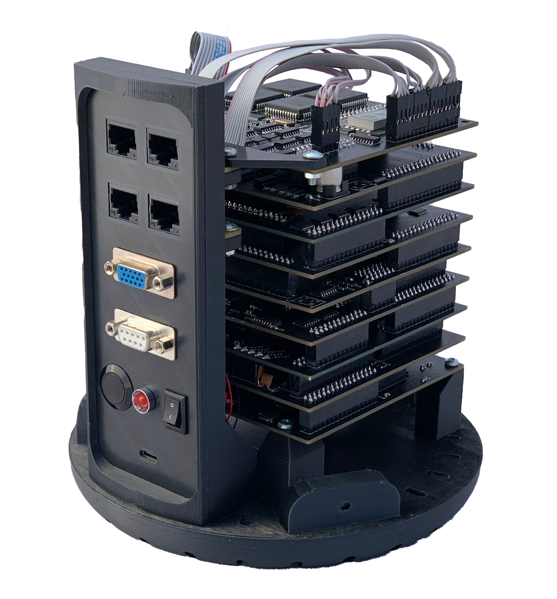

Pineapple ONE
Open source 32 bit RISC-V CPU that you can make at home

Welcome! Pineapple ONE is a functioning (makro)processor, that is based on a open-source architecture RISC-V.
This architecture is becoming very popular these days and it is well, open-source, so we chose to build a cpu
only out of discrete logic around it. You heard it right, there is no FPGA nor any microcontroller, there are
just logic gates and memories.
Our goal is to prove that designing a “modern” CPU isn’t that hard, so we have released our schematics and made
it open source as well. You can check out our [GitHub repository] for more information. If there would be enough
interest, maybe we could make a DIY kit, so anybody interested with soldering skills would be able to make their
own Pineapple ONE*!
* “Pineapple ONE” is a temporary name and could be changed later due to legal reasons.
[Filip Szkandera] spend two years designing and building a 32 bit cpu utilising the RISC-V architecture. His cpu supports a RV32I standard, so it is compatible with available compilers. It runs at 500 kHz, has a 512 kB program memory and 512 kB RAM. It also features a simple B&W VGA card with resolution of 200x150 px, so we can connect an external monitor and display some simple graphics. He created a simple shell program, that let users interact with the CPU via a keyboard connected to one of the input ports. He made a prototype first, where all the necessary features were tested and debugged and then optimised it to a modular CPU in a tower-like structure. He wanted to turn this into a community project, so anybody who is interested can contribute, or build their own. Now it is time to see how far we can get it together as a community.
The current prototype that [Filip] made is not 100% reliable and kind of slow. To (maybe) turn is into a kit of some sort, these issues would need to be resolved and maybe some additional features added - maybe some audio card, native PS/2 keyboard support or a better VGA card - possibilities are endless. If you want to contribute, you can help with schematics, designing PCBs, creating new modules, softwares, website(s) or literally anything else, it doesn’t need to be CPU related at all. Feel free to join our discord server to discuss your ideas, or just hang out there if you feel like :).
Student of Higher School and Secondary School of Electrotechnical Engineering in Olomouc, Czech Republic. Nineteen years old.
(2021)
@ten_filip
filip.szkandera@gmail.com
Filip Szkandera
| Name | ||
|---|---|---|
| Martin Prochazka | pro.nitram@gmail.com | - |
| Tadeas Frycak | Frycaktadeas@seznam.cz | @TFrycak |